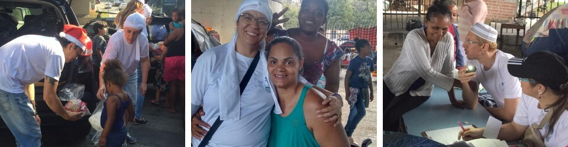

“A fome dos generosos é a sede de servir”
- Pai Denisson D'Angelis
O Instituto CEU Estrela Guia é uma instituição assistencialista, sem fins lucrativos, isenta de quaisquer preconceitos e legalmente constituída. E o que isso significa na prática?
Significa que o CEU Estrela Guia tem como objetivo e compromisso fundamental a preservação e o desenvolvimento pleno da vida. Fundada em 2015 por Denisson De Angelis e a Kelly De Angelis, dirigentes da casa, todos os trabalhos existem como reflexo de uma busca incessante pela paz, fraternidade, caridade e amor ao próximo.
Localizado na região da Praça da Árvore, zona sul de São Paulo, o instituto pratica trabalhos caritativos e sociais.
Trabalhos Caritativos
“Curando as feridas dos outros é que curamos as nossas”
- Pai Denisson D'Angelis
No mundo, há mais de 820 milhões de pessoas passando fome. Ou seja, milhões de pessoas não tem acesso estável a alimentos. Só em São Paulo, a população de rua aumentou 53% nos últimos 4 anos. São em torno de 24 mil pessoas no total.
Diante desses números, o C.E.U. Estrela Guia não podia ser indiferente.
Com apoio voluntários, foi criado a Campanha de amparo físico para todos aqueles que se encontram desabrigados e em situação de rua.
Só em 2019, foram mais de 15 toneladas de alimentos distribuídos a mais de 150 famílias, além de roupas, kits de higiene pessoal e brinquedos as crianças.
Hoje são mais de 200 famílias sobre o amparo do C.E.U. Estrela Guia. E nada disso seria possível se não houvesse a união de cada um! Com o apoio de todos somos capazes de manter essas famílias amparadas e ampliar o número de pessoas a serem ajudadas.
Além dos trabalhos com as pessoas em situação de rua, anualmente visitamos ONGs e instituições de apoio a crianças carentes e idosos em casas de repouso. Assim podemos estender o amor e a caridade não apenas com doações de alimentos, roupas e brinquedos mas também com apoio emocional de um carinho e um abraço.
Com a chegada do COVID-19 no Brasil e o compromisso fundamental de preservação da vida, o instituto fechou temporariamente as portas. Inevitavelmente isso faz com que diminua as contribuições que mantém as portas abertas e os projetos funcionando.
Mais de
200
famílias cadastradas
Mais de
15 toneladas
de alimentos distribuídos em 2019
Mais de
1 tonelada
de alimentos distribuídos todo mês
Contribua com as ações do CEU!
Depósito em conta
Em nome de: CEU Estrela Guia
CPNJ: 23.491.453/0001-63
Banco: Caixa Econômica Federal
Agência: 0255 - Op. 003
CC: 00001964-1
Retirada ou Entrega
Para contribuir com doação de alimentos, roupas, brinquedos e produtos de higiene, entre em contato conosco e combine o melhor horário de entrega dessas contribuições.